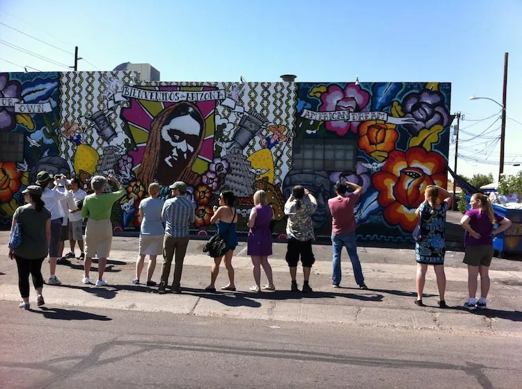
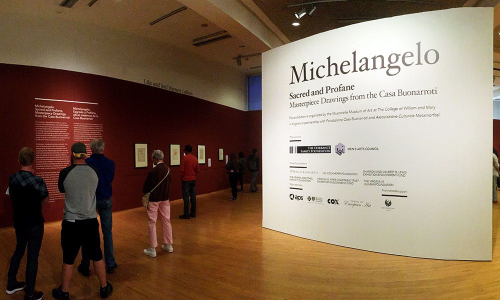

April 10, 2023
The first Asian screenwriter in Hollywood’s 1920s ‘dream factory,’ Winnifred Eaton, challenged its racism
By Mary Chapman and Sydney Lines
A century before Michelle Yeoh became the first Asian woman to win an Oscar for Best Actress, the daughter of a Chinese mother and a white English father, Winnifred Eaton, was working behind the scenes in Hollywood.
Because the humanities need champions in the community as much as they need academics.
What happens when big tech and culture collide?
How museums can rethink their civic roles as catalysts for change in the communities they serve.

How street art democratizes creativity.
Bruce Munro’s Sonoran Light at the Desert Botanical Gardens was on exhibition from November 20, 2015 to May 8, 2016.

The traveling exhibit, Sacred and Profane, was on view at the Phoenix Art Museum until March 27, 2016.